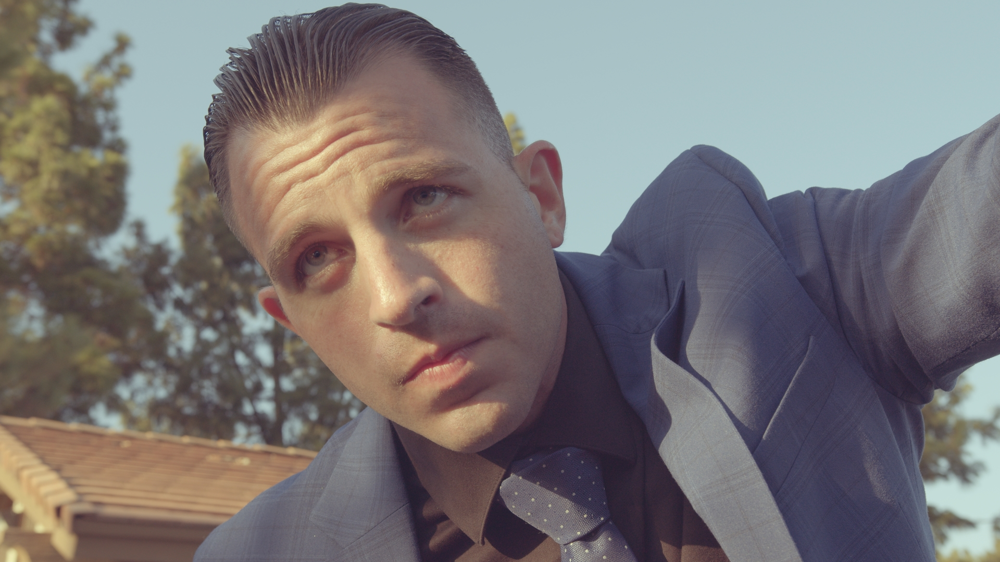
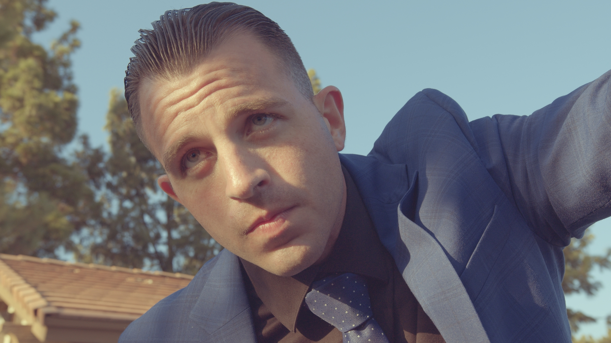
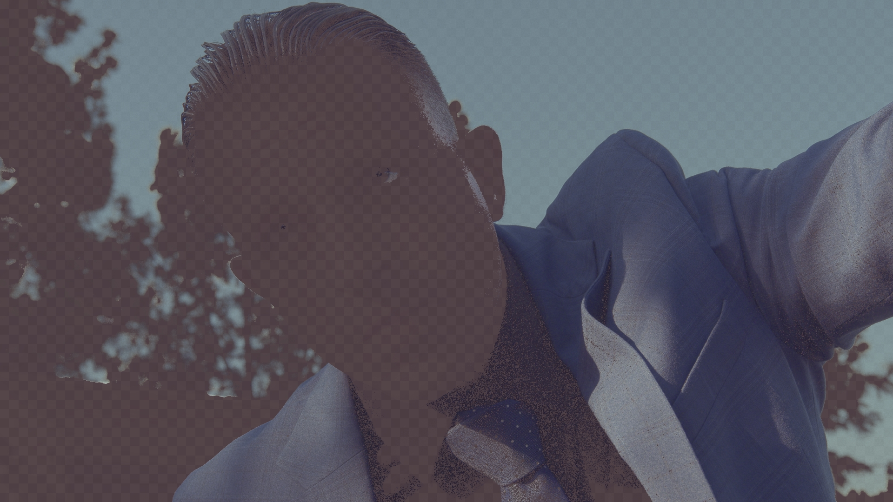
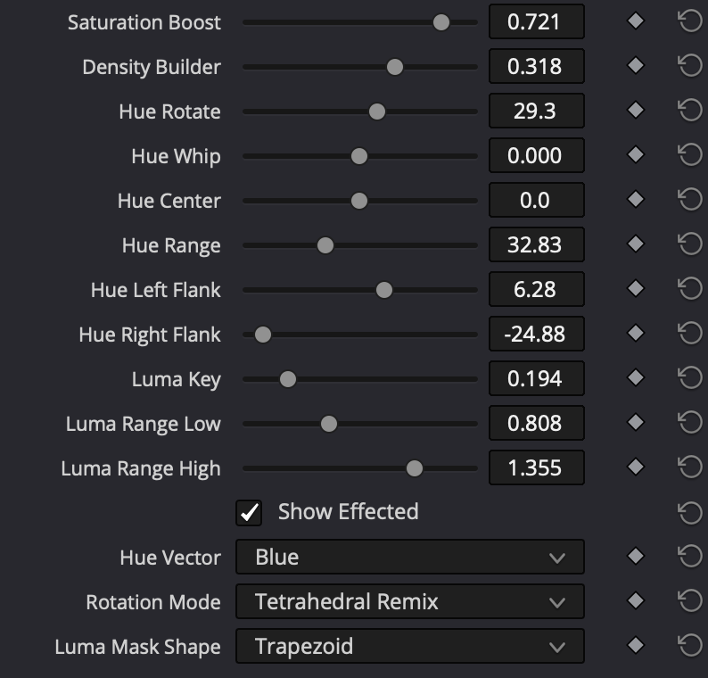

Color Slicer isolates exactly one hue, gated by both colour and brightness, then reshapes it three different ways. Pick a vector, slice it out, and grade only what's inside the selection.


BeforeAfter
Real grade: Blue vector, Tetrahedral Remix. Drag the slider to compare; below, the isolated selection in Show Effected.
Live · Slice one colour out
Try it
The problem
Resolve's built-in qualifiers and hue curves smear across wide bands and take constant babysitting. Color Slicer isolates a single hue, gated by both colour and brightness, so your move lands only where you mean it.
A wide selection catches skin, wood and warm highlights all at once. You fight it with extra windows and keys.
A tight two-axis mask holds the selection to a single hue at a chosen brightness. The rest of the frame stays untouched.
The headline feature
All three move a hue. Each moves it through a different space.
Every shade moves by the same angle and lightness is preserved. A plain rotation of the colour plane, in a perceptually-uniform space.
Shove a corner of the RGB cube and let the colours inside follow it. Saturation- and value-dependent, so the move feels organic and analog.
Pull a scattered hue into one tight tone, or push two colours that blur together back apart. It never rotates, it gathers.
Shape the move
Two controls shape the rotation itself. Whip sets how your most saturated colours move relative to the low-sat ones, and Density shapes how richly the colour builds as it shifts.
During a hue rotation, Whip decides how your high-chroma values travel relative to the low-saturated ones. Push it positive and the vivid colours lead the rotation, moving further and faster. Pull it negative and they lag behind, trailing the pastels. At zero, every saturation rotates by the same angle.
Density shapes how richly the colour builds as it shifts, driving saturation and subtractive-dye density together through a tetrahedral film matrix, so the falloff reads photographic rather than electronic.
Subtractive density ramp: colour darkens by pulling all three channels, like dye on film.
Everything in the box
Red, Yellow, Green, Cyan, Blue, Magenta and Skin as selectable starting points.
Independent left and right bell-curve widths around the center.
Separate low and high falloff to gate by brightness on each side.
Soft bell or flat-topped plateau for the luminance shape.
Rigid, lightness-safe hue turn in perceptual space.
Organic corner-shove hue moves through the RGB cube.
Consolidate a scattered hue, or push two apart.
Bias the effect by chroma toward vivid or pastel pixels.
Subtractive-dye density through a tetrahedral film matrix.
Lift or cut saturation only inside the active selection.
Gentle limiting keeps pushed colours from breaking or banding.
Neutral-checker diagnostic to verify the selection before grading.
Get it
Color Slicer is a free DCTL. Download it directly, or let the Tool Box Manager install it and keep it updated alongside the rest of the kit. No membership required.
The whole tool: 7 vectors, the two-axis mask, all three rotation modes and Show Effected. Yours to keep.
macOS, Windows and Linux. Apply it on a node as a DCTL, pick a vector and a rotation mode, and you're slicing.
Free · macOS · Windows · Linux
The premium tools
You don't need to pay for Color Slicer. But if it earns a spot in your kit, the premium tools unlock every paid tool on the channel, plus every update and new release, as a Happy Little Noder. Your price locks in the day you join and stays locked, even if you take a year or two off. We may raise it for new members later, but never for you.
Everything you see on YouTube, plus every update, for less than a single film stock LUT pack.
Photo Chemist, the Hue Tools, Technicolor DRT and the whole premium kit, all in one purchase. New tools land here first.
One annual payment · price locked
Getting started
The Tool Box Manager installs Color Slicer, keeps it organized, and updates it for you alongside the rest of the kit. Works on macOS, Windows and Linux, no manual file-copying.
Grab the latest release from GitHub and open it. It's your home base for every Dec. 18 tool.
Browse the catalog and select Color Slicer.
The Manager drops the DCTL into the right place for you, no digging through system folders.
Relaunch Resolve so it picks up the new DCTL.
Add a node, apply Color Slicer as a DCTL, pick a vector and a rotation mode, and start slicing.
Slice one hue out, gated by light, and reshape it your way. Free for DaVinci Resolve.
Download Color Slicer · Free →